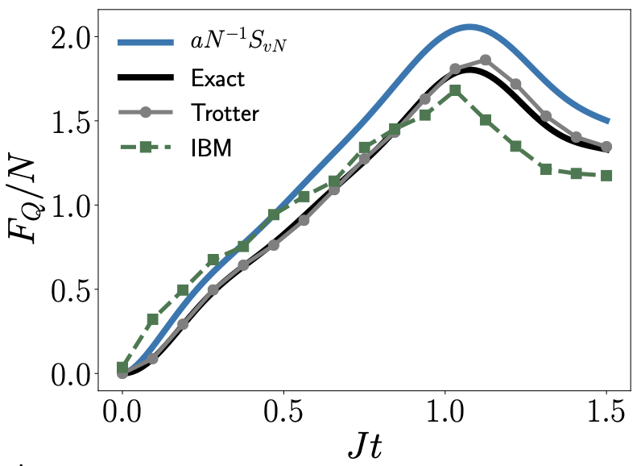
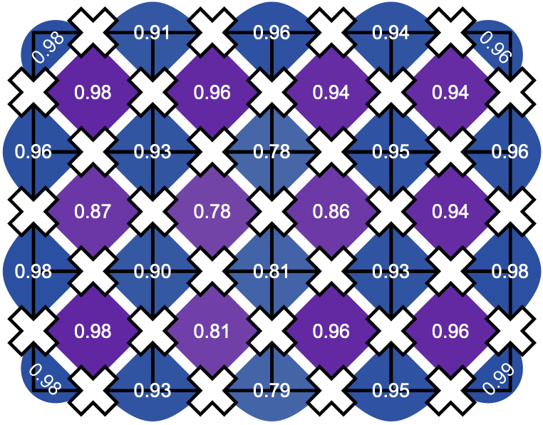
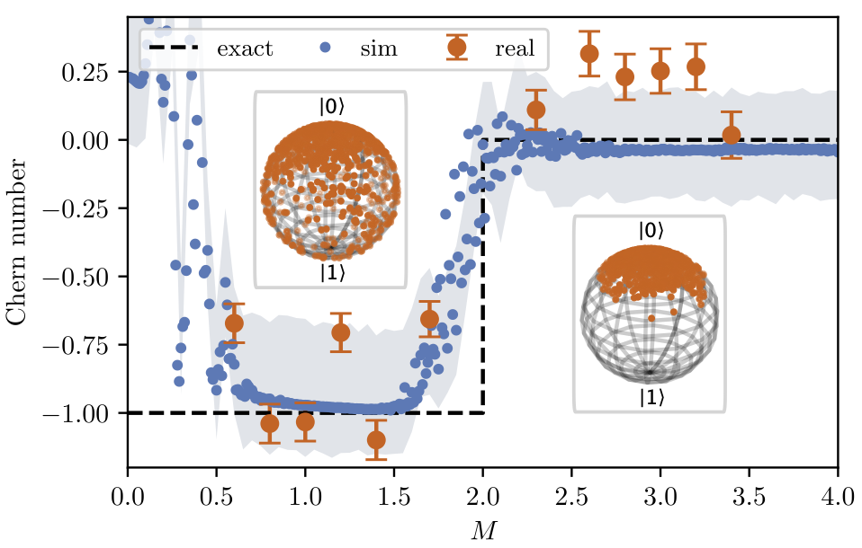
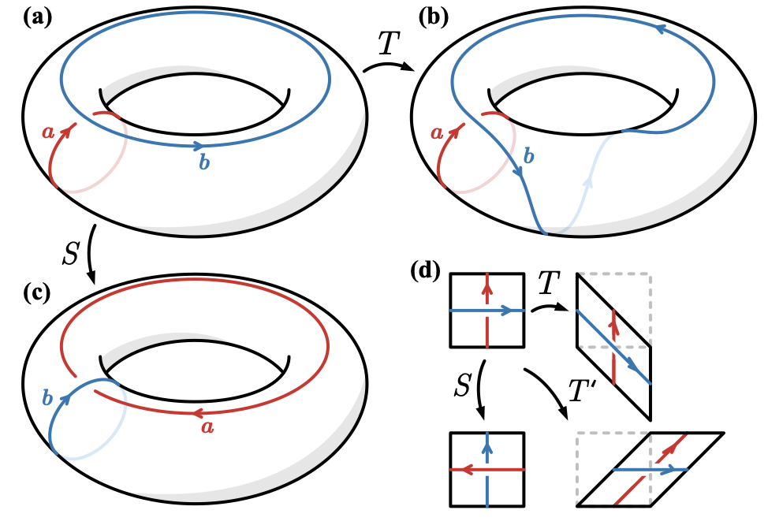
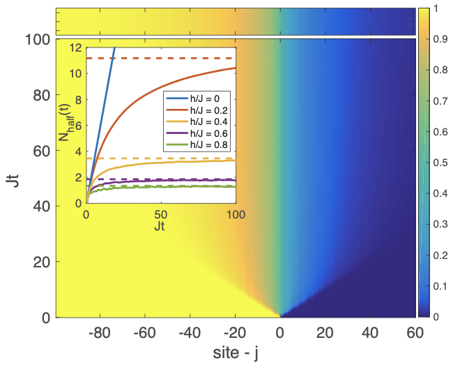
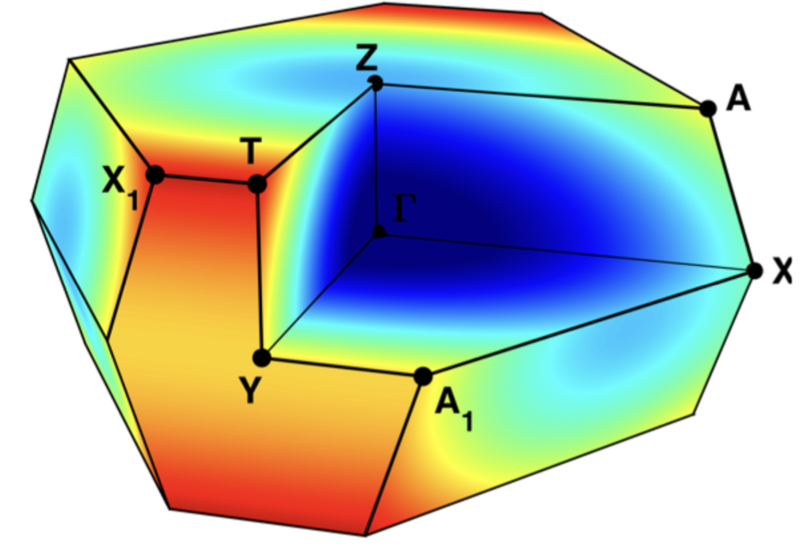

Quantum Computers
Digital Simulation of Topological Systems
Using digital quantum computers based on qubits and gates, we have introduced methods for realising and studying topological systems. This includes the largest scale implementation of the toric code on Google's sycamore chip [1]. We additionally measure several topological properties of the system and its excitations and propose generalisations beyond the toric code [2]. We have also proposed methods for studying symmetry protected topological phases across a phase transition in [3].Digital Simulation of Many-Body Dynamics
I have been working with the state-of-the-art IBM quantum computers to simulate far-from-equilibrium quantum dynamics [4,5]. These types of simulations generally require computation resources that scale exponentially in system size. This is problematic even for the worlds most powerful classical supercomputers, which can tackle at most ~50 spins (qubits). Quantum computers may provide a way to directly simulate this quantum dynamics with physical resources scaling only linearly with system size, an exponential improvement! Our work investigates the capabilities and limitations of using current and near-term quantum computers for this purpose.Analogue Simulation of Time-Dependent Hamiltonians
Motivated by the access offered by IBM to the low level microwave pulse control of their quantum computers, I am investigating the possibilities of using these devices for analogue simulations. By controlling the microwave pulses directly it is possible to realise time-dependent Hamiltonians for a single qubit and coupling arrays of qubits. As a first step, Daniel Malz and I performed an experiment where we drove a single superconducting qubit with two incommensurate frequencies [6]. This experiment followed an earlier proposal and confirmed the presence of a temporal topological band structure. We were able to accurately extract the quantised Chern number that characterises the different topological phases.  
Top: The quantum Fisher information for a spin-chain as computed by an IBM quantum computer, compared with classical numerics and the von Neumann entanglement entropy [5]. Middle: The measured parity values of the toric code state prepared in [1]. Bottom The Chern number extracted from a quasi-periodically driven superconducting qubit [6].
[1] Realizing topologically ordered states on a quantum processor. K. J. Satzinger, Y. Liu, A. Smith, C. Knapp, et al. Science, 374, 6572, (1242-1247), (2021). [arXiv:2104.01180]
[2] Methods for simulating string-net states and anyons on a digital quantum computer. Yu-Jie Liu, Kirill Shtengel, Adam Smith, Frank Pollmann. [arXiv:2110.02020]
[3] Crossing a topological phase transition with a quantum computer. Adam Smith, Bernhard Jobst, Andrew G. Green, Frank Pollmann. [arXiv:1910.05351]
[4] Real- and imaginary-time evolution with compressed quantum circuits. Sheng-Hsuan Lin, Rohit Dilip, Andrew G. Green, Adam Smith, Frank Pollmann. PRX Quantum 2, 010342 (2021). [arXiv:2008.10322]
[5] Simulating quantum many-body dynamics on a current digital quantum computer. Adam Smith, M. S. Kim, Frank Pollmann, Johannes Knolle. npj Quantum Information, 5, 106 (2019) [arXiv:1906.06343]
[6] Topological two-dimensional Floquet lattice on a single superconducting qubit. Daniel Malz, Adam Smith. Phys. Rev. Lett. 126, 163602 (2021). [arXiv:2012.01459]
Sign-Problems in Topological Phases
Monte Carlo methods are some of our most powerful numerical methods for understanding phases of matter. However, when we try to use them to study quantum systems, we typically find that there is an obstruction that makes the computation prohibitively expensive -- the so-called sign problem. Recently we have proven that many topological phases of matter have intrinsic sign problems [1,2]. These are fundamental properties of the phases and cannot be avoided. We prove this by relating the topological information, contained in the S and T matrices, to the presence of a sign problems. We prove that a wide range of topological phases of matter, including chiral and non-abelian phases for both bosons and fermions have these intrinsic sign problems. This work provides a deeper insight into the complexity of these phases of matter, some of which may be used for quantum computations beyond the reach of our current computers.
The modular transformations on the torus that allow us to extract the topological information contained in the S and T matrix. By related properties of these matrices to conditions of having a sign problem we prove the presence of irremovable, intrinsic sign problems for many topological phases [1,2].
[1] Intrinsic Sign Problems in Topological Quantum Field Theories. Adam Smith, Omri Golan, Zohar Ringel. Phys. Rev. Research 2, 033515 (2020) [arXiv:2005.05343]
[2] Intrinsic sign problem in fermionic and bosonic chiral topological matter. Omri Golan, Adam Smith, Zohar Ringel. Phys. Rev. Research 2, 043032 (2020) [arXiv:2005.05566]
Disorder-Free Localization
Localization is the fundamental phenomenon in condensed matter physics. It is the spatial localization of itinerant electrons (or other d.o.f.) in the presence of disorder. This leads to an insulating material due to the lack of charge transport. More importantly, isolated localized systems do not thermalize and local information is preserved at all times. In our work we answer a long-standing question about localized systems and demonstrate for the first time that localization can occur without disorder, through interactions alone [1-4]. The model that we introduce is an example of a lattice gauge theory, which are ubiquitous in the theoretical description of strongly-correlated condensed matter. Our model is, for instance, closely related to the Hubbard and Falicov-Kimball models, and the toric code. Using current technologies in ultracold atom optical lattice experiments, we also proposed an experimental realisation of our model and its dynamical simulation [5].
The limited spreading of an initial domain wall in a model of disorder-free localization [1]
[1] Disorder-Free Localization. Adam Smith, Johannes Knolle, Dmitry L. Kovrizhin, Roderich Moessner. Phys. Rev. Lett. 118, 266601 (2017). [arXiv:1701.04748]
[2] Dynamical localization in Z2 lattice gauge theories. Adam Smith, Johannes Knolle, Roderich Moessner, Dmitry L. Kovrizhin. Phys. Rev. B 97, 245137 (2018) [arXiv:1803.06574]
[3] Absence of Ergodicity without Quenched Disorder: From Quantum Disentangled Liquids to Many-Body Localization. Adam Smith, Johannes Knolle, Roderich Moessner, Dmitry L. Kovrizhin. Phys. Rev. Lett. 119, 176601 (2017). [arXiv:1705.09143]
[4] Logarithmic spreading of out-of-time-ordered correlators without many-body localization. Adam Smith, Johannes Knolle, Roderich Moessner, Dmitry L. Kovrizhin. (2018 preprint) [arXiv:1812.07981]
[5] Dynamics of a lattice gauge theory with fermionic matter — minimal quantum simulator with time-dependent impurities in ultracold gases. Adam Smith, Dmitry L. Kovrizhin, Roderich Moessner, Johannes Knolle. Quantum Sci. Technol. 3, 044003 (2018). [arXiv:1803.06575]
Spectroscopy of Three-Dimensional Kitaev Spin Liquids
Spectroscopic experimental techniques such as inelastic neutron scattering (INS), are powerful methods for understanding the magnetic properties of a material. Quantum spin liquids (QSLs) are a particularly interesting phase magnetic phase of matter that do not order at zero temperature. QSLs are topological phases of matter and typically have exotic fractionalised excitations, unlike the normal fermions and bosons. However, this lack of order is also responsible for difficulty in measuring and characterising them, and so it's important to develop a theoretical understanding of the dynamical properties of these materials that are probed through INS.
Alexei Kitaev proposed a simple, soluble model on a honeycomb lattice [1] which realises a quantum spin and that is closely related to some real materials, such as alpha-RuCl, and Li2IrO3. Using an exact method for computing the dynamical structure factor (probed in INS), which was developed by Knolle et al[2] for the honeycomb model, we study a range of three-dimensional generalisations [3,4]. These models, particularly on the hyperhoneycomb lattice, are also of relevance to Iridate compounds, such as gamma-Li2IrO3, that has been experimentally synthesised.

The dynamical structure factor across the Brillouin zone of the hyperhoneycomb lattice [3]
[1] Anyons in an exactly solved model and beyond. Alexei Kitaev Annals of Physics 321, 1, 2-111 (2006)
[2] Dynamics of a two-dimensional quantum spin liquid: signatures of emergent Majorana fermions and fluxes. J. Knolle, D. L. Kovrizhin, J. T. Chalker, and R. Moessner Phys. Rev. Lett. 112, 207203 (2014)
[3] Majorana spectroscopy of three-dimensional Kitaev spin liquids. Adam Smith, Johannes Knolle, Dmitry L. Kovrizhin, John T. Chalker, Roderich Moessner. Phys. Rev. B 93, 235146 (2016). [arXiv:1604.05199]
[4] Neutron scattering signatures of the 3D hyperhoneycomb Kitaev quantum spin liquid. Adam Smith, Johannes Knolle, Dmitry L. Kovrizhin, John T. Chalker, Roderich Moessner. Phys. Rev. B 92, 180408 (2015). [arXiv:1508.05324]